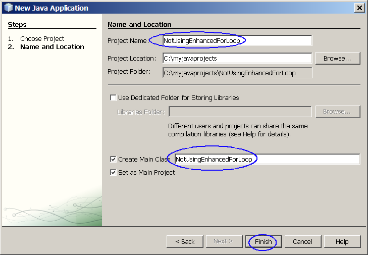
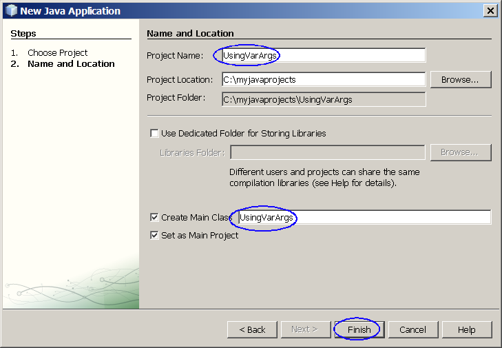
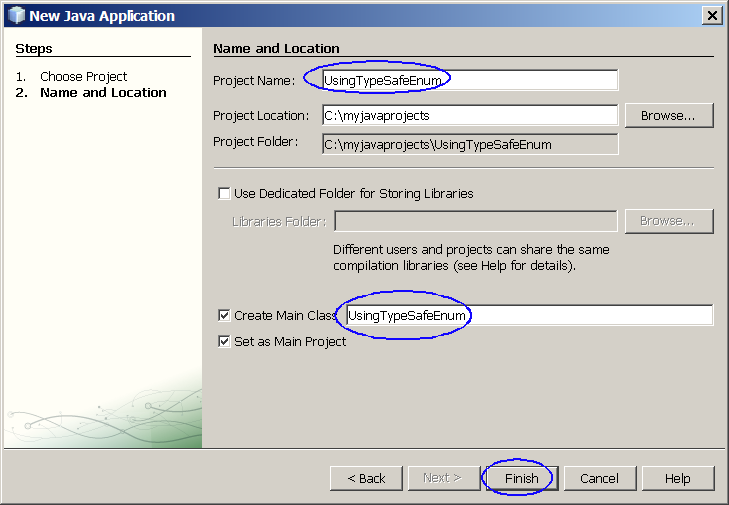

Java SE 5 Language Feature Enhancements
Today Java technology is everywhere in
large enterprise systems,
desktops, hand-held devices, and smart cards. Consequently, Java
technology is the platform of choice for developers all over the world.
All this has happened in the short time since the technology was first
introduced in 1995. While there have been updates and enhancements
since the first version, release 5.0 of the core Java platform brings
to the table more language-level updates and other enhancements than at
any other time, through the incorporation of a number of Java
Specification Requests (JSRs). In this hands-on session, you will learn
about all these changes and how to build desktop applications using
version 5.0 of the Java platform. This hands-on lab takes you
through the basic language feature enhancements of Java SE 5.
Expected duration: 150 minutes
Software Needed
Before you begin, you need to install required software (JDK and
NetBeans IDE) on your
computer as
described
here. Also download and unzip the hands-on lab file mentioned
below.
- 1106_javase5language.zip (download)
- It contains this document and the lab contents
- Download it and unzip in a directory of your choice
Change Log
- March. 12th, 2007: Created
- May 27th, 2007: Homwork is added
- Jan. 10th, 2009: NetBeans 6.5 is used
Lab Exercises
Exercise 1: Autoboxing
As any Java programmer knows, you cannot put an int (or other primitive
value) into a collection. Collections can only hold object references,
so you have to box primitive values into the appropriate wrapper class
(which is Integer in the case of int). When you take the object out of
the collection, you get the Integer that you put in; if you need an
int, you must unbox the Integer using the intValue method. All of this
boxing and unboxing is a pain, and clutters up your code. The
autoboxing and unboxing feature automates the process, eliminating the
pain and the clutter.
The Autoboxing and Unboxing feature of J2SE 5.0 eliminates the drudgery
of manual conversion between primitive types (such as int or long) and
wrapper types (such as Integer or Long).
(1.1)
Example without autoboxing
0. Start NetBeans IDE if you have not done so yet.
1. Create a new NetBeans project
- Select File->New Project (Ctrl+Shift+N). The New Project dialog box appears.
- Under Choose Project
pane,
select Java under Categories and Java Application under Projects.
- Click Next.
- Under Name and Location
pane, for the Project Name
field, type in NotUsingAutoBoxing as
project name.
- For Create Main Class
field, type in NotUsingAutoBoxing.
(Figure-1.10 below)
- Click Finish.

Figure-1.10: Create a new project
- Observe that NotUsingAutoBoxing
project
appears and IDE generated NotUsingAutoBoxing.java
is displayed in the source editor window of NetBeans IDE.
2. Modify the IDE generated
NotUsingAutoBoxing.java
as shown in Code-1.11 below. Study the code by paying
special attention to the bold fonted parts.
public class NotUsingAutoBoxing{
// Suppose the internal variables are in Wrapper
types
Integer iObj;
Float fObj;
Long lObj;
Double dObj;
public NotUsingAutoBoxing() {
}
public static void main( String[] args ) {
NotUsingAutoBoxing a = new
NotUsingAutoBoxing();
// You have to create instances of Wrapper classes first
// before you save them into the internal variables. This
// is called boxing.
a.iObj = new Integer( 22 );
a.fObj = new Float( 22.0 );
a.lObj = new Long( 22L );
a.dObj = new Double( 22 );
// In the following code, you are unboxing in order to
// get primitive types.
System.out.println( " int Value of iObj is: " + a.iObj.intValue() );
System.out.println( " float Value of iObj is: " + a.fObj.floatValue() );
System.out.println( " long Value of iObj is: " + a.lObj.longValue() );
System.out.println( " double Value of iObj is: " + a.dObj.doubleValue()
);
}
}
|
Code-1.11:
NotUsingAutoBoxing.java
3. Build and run the project
- Right click NotUsingAutoBoxing project
and select Run.
- Observe the result in the Output window of the IDE.
(Figure-1.13 below)
int Value of iObj is: 22
float Value of iObj is: 22.0
long Value of iObj is: 22
double Value of iObj is: 22.0
|
Figure-1.13: Result
(1.2)
Example with autoboxing
1. Create a new NetBeans project
- Select File->New Project (Ctrl+Shift+N). The New Project dialog box appears.
- Under Choose Project
pane,
select Java under Categories and Java Application under Projects. Click Next.
- Under Name and Location
pane, for the Project Name
field, type in UsingAutoboxing as
project name.
- For Create Main Class
field, type in UsingAutoboxing.
- Click Finish.
- Observe that UsingAutoboxing project
appears and IDE generated UsingAutoboxing.java
is displayed in the source editor window of NetBeans IDE.
2. Modify the IDE generated
UsingAutoboxing.java
as shown in Code-1.21 below. Study the code by paying
special attention to the bold fonted parts.
public class UsingAutoBoxing{
// Suppose the internal variables are in Wrapper
types
Integer iObj;
Float fObj;
Long lObj;
Double dObj;
public UsingAutoBoxing() {
}
public static void main( String[] args ) {
UsingAutoBoxing a = new
UsingAutoBoxing();
// a.iObj = new Integer( 22
);
a.iObj =
22;
// Using AutoBoxing
// a.fObj = new Float( 22.0
);
a.fObj = 22.0f
;
// Using AutoBoxing
// a.lObj = new Long ( 22L );
a.lObj =
22L;
// Using AutoBoxing
// a.dObj = new Double( 22 );
a.dObj =
22d;
// Using AutoBoxing
// System.out.println( " int
Value of iObj is: " + a.iObj.intValue() );
System.out.println( " int
Value of iObj is: " + a.iObj ); // Using
UnBoxing
// System.out.println( "
float Value of iObj is: " + a.fObj.floatValue() );
System.out.println( " float
Value of iObj is: " + a.fObj ); // Using UnBoxing
// System.out.println( "
long Value of iObj is: " + a.lObj.longValue() );
System.out.println( " long
Value of iObj is: " + a.lObj ); // Using UnBoxing
// System.out.println( "
double Value of iObj is: " + a.dObj.doubleValue() );
System.out.println( " double
Value of iObj is: " + a.dObj ); // Using UnBoxing
}
}
|
Code-1.21:
UsingAutoBoxging.java
3. Build and run the project
- Right click UsingAutoBoxing project
and select Run.
- Observe the result in the Output window of the IDE.
(Figure-1.23 below)
int Value of iObj is: 22
float Value of iObj is: 22.0
long Value of iObj is: 22
double Value of iObj is: 22.0
|
Figure-1.23: Result
Summary
In this exercise, you learned how to use the Autoboxing/Unboxing
functionality in J2SE 5.0, which eliminates the drudgery of manual
conversion between primitive types and wrapper types.
Exercise 2: Enhanced For loop
The enhanced For loop construct eliminates the drudgery and
error-proneness of iterators and index variables when iterating over
collections and arrays.
(2.1)
Example wihtout using enhanced For loop
1. Create a new NetBeans project
- Select File->New Project (Ctrl+Shift+N). The New Project dialog box appears.
- Under Choose Project
pane,
select Java under Categories and Java Application under Projects.
- Click Next.
- Under Name and Location
pane, for the Project Name
field, type in NotUsingEnhancedForLoop as
project name.
- For Create Main Class
field, type in NotUsingEnhancedForLoop.
- Click Finish.

- Observe that NotUsingEnhancedForLoop
project
appears and IDE generated NotUsingEnhancedForLoop.java
is displayed in the source editor window of NetBeans IDE.
2. Modify the IDE generated
NotUsingEnhancedForLoop.java
as shown in Code-2.11 below. Study the code by paying
special attention to the bold fonted parts.
import java.util.*;
public class NotUsingEnhancedForLoop {
public static void main( String[] args ) {
Vector<Object> v = new
Vector<Object>();
v.add( new String( "Hello
World" ) );
v.add( new Integer( 10 ) );
v.add( new Double( 11.0 ) );
v.add( new Long( 12 ) );
for ( Iterator i = v.iterator();
i.hasNext(); ) {
System.out.println( " Vector element is: " + i.next() );
}
String [] s = {
"Java 2",
"Platform",
"Standard",
"Edition",
"1.5",
"is",
"the",
"latest",
"release",
"of",
"the",
"Java",
"Platform" };
for ( int i = 0; i < s.length; ++i ) {
System.out.println( "String array element is: " + s[i] );
}
}
}
|
Code-2.11:
NotUsingEnhancedForLoop.java
3. Build and run the project
- Right click NotUsingEnhancedForLoop
project
and select Run.
- Observe the result in the Output window of the IDE.
(Figure-2.13 below)
Vector element is: Hello
World
Vector element is: 10
Vector element is: 11.0
Vector element is: 12
String array element is: Java 2
String array element is: Platform
String array element is: Standard
String array element is: Edition
String array element is: 1.5
String array element is: is
String array element is: the
String array element is: latest
String array element is: release
String array element is: of
String array element is: the
String array element is: Java
String array element is: Platform
|
Figure-2.13: Result
return to top of the
exercise
(2.2)
Example with using enhanced For loop
1. Create a new NetBeans project
- Select File->New Project (Ctrl+Shift+N). The New Project dialog box appears.
- Under Choose Project
pane,
select Java under Categories and Java Application under Projects.
- Click Next.
- Under Name and Location
pane, for the Project Name
field, type in UsingEnhancedForLoop as
project name.
- For Create Main Class
field, type in UsingEnhancedForLoop.
- Click Finish.
- Observe that UsingEnhancedForLoop
project
appears and IDE generated UsingEnhancedForLoop.java
is displayed in the source editor window of NetBeans IDE.
2. Modify the IDE generated
UsingEnhancedForLoop.java
as shown in Code-2.21 below. Study the code by paying
special attention to the bold fonted parts.
import java.util.*;
public class UsingEnhancedForLoop {
public static void main( String[] args ) {
Vector<Object> v = new
Vector<Object>();
v.add( new String( "Hello
World" ) );
v.add( new Integer( 10 ) );
v.add( new Double( 11.0 ) );
v.add( new Long( 12 ) );
for ( Object o : v ) {
System.out.println( " Vector element is: " + o );
}
String [] s = {
"Java 2",
"Platform",
"Standard",
"Edition",
"1.5",
"is",
"the",
"latest",
"release",
"of",
"the",
"Java",
"Platform" };
for ( String i : s ) {
System.out.println( " String Array element is: " + i );
}
}
}
|
Code-2.21:
UsingAutoBoxging.java
3. Build and run the project
- Right click UsingEnhancedForLoop
project
and select Run.
- Observe the result in the Output window of the IDE.
(Figure-2.23 below)
Vector element is: Hello
World
Vector element is: 10
Vector element is: 11.0
Vector element is: 12
String array element is: Java 2
String array element is: Platform
String array element is: Standard
String array element is: Edition
String array element is: 1.5
String array element is: is
String array element is: the
String array element is: latest
String array element is: release
String array element is: of
String array element is: the
String array element is: Java
String array element is: Platform |
Figure-2.23: Result
Summary
In this lab exercise, you learned how to
use the Enhanced For Loops of J2SE 5.0.
return to
the top
Exercise 3: Static imports
Static import lets you avoid qualifying
static members with class names without the shortcomings of the
"Constant Interface antipattern."
(3.1)
Example without using static imports
1. Create a new NetBeans project
- Select File->New Project (Ctrl+Shift+N). The New Project dialog box appears.
- Under Choose Project
pane,
select Java under Categories and Java Application under Projects.
- Click Next.
- Under Name and Location
pane, for the Project Name
field, type in NotUsingStaticImport as
project name.
- For Create Main Class
field, type in testpackage.NotUsingStaticImport.
- Click Finish.
- Observe that NotUsingStaticImport
project
appears and IDE generated NotUsingStaticImport.java
is displayed in the source editor window of NetBeans IDE.
2. Modify the IDE generated
NotUsingStaticImport.java
as shown in Code-3.11 below. Study the code by paying
special attention to the bold fonted parts.
package testpackage;
public class NotUsingStaticImport{
public static void main( String[] args ) {
System.out.println( "Here
are the attributes of a employee who will be hired: " );
System.out.println( "Minimum Salary is: " + EmpAttributes.MINSALARY );
System.out.println( "Maximum Salary is: " + EmpAttributes.MAXSALARY );
System.out.println( "Max Vacation Days: " + EmpAttributes.MAXVACATION );
System.out.println( "Max Raise Percentage: " +
EmpAttributes.MAXANNUALRAISEPERCENTAGE );
}
}
|
Code-3.11:
NotUsingStaticImport.java
3. Write EmpAttributes.java
under testpackage package.
package testpackage;
public class EmpAttributes {
public static final int MINSALARY = 50000;
public static final int MAXSALARY = 70000;
public static final int MAXVACATION = 15;
public static final int MAXANNUALRAISEPERCENTAGE =
10;
}
|
Code-3.12: EmpAttributes.java
4. Build and run the project
- Right click NotUsingStaticImport
project
and select Run.
- Observe the result in the Output window of the IDE.
(Figure-3.13 below)
Here are the attributes of a
employee who will be hired:
Minimum Salary is: 50000
Maximum Salary is: 70000
Max Vacation Days: 15
Max Raise Percentage: 10
|
Figure-3.13: Result
return to top of the
exercise
(3.2)
Example with using static imports
1. Create a new NetBeans project
- Select File->New Project (Ctrl+Shift+N). The New Project dialog box appears.
- Under Choose Project
pane,
select Java under Categories and Java Application under Projects. Click Next.
- Under Name and Location
pane, for the Project Name
field, type in UsingStaticImport as
project name.
- For Create Main Class
field, type in testpackage.UsingStaticImport.
- Click Finish.
- Observe that UsingStaticImport project
appears and IDE generated UsingStaticImport.java
is displayed in the source editor window of NetBeans IDE.
2. Modify the IDE generated
UsingStaticImport.java
as shown in Code-3.21 below. Study the code by paying
special attention to the bold fonted parts.
The static import construct allows unqualified access to static members
without inheriting from the type containing the static
members. For example, you can say just MINSALARY instead of
EmpAttribs.MINSALARY.
package testpackage;
import static testpackage.EmpAttributes.*;
public class UsingStaticImport {
public static void main( String[] args ) {
System.out.println( "Here
are the attributes of a employee who will be hired: " );
System.out.println( "Minimum Salary is: " + MINSALARY );
System.out.println( "Maximum Salary is: " + MAXSALARY );
System.out.println( "Max Vacation Days: " + MAXVACATION );
System.out.println( "Max Raise Percentage: " + MAXANNUALRAISEPERCENTAGE
);
}
}
|
Code-3.21:
UsingStaticImport.java
3. Write EmpAttributes.java under testpackage package. This is
the same code as you have written in the previous step.
package testpackage;
public class EmpAttributes {
public static final int MINSALARY = 50000;
public static final int MAXSALARY = 70000;
public static final int MAXVACATION = 15;
public static final int MAXANNUALRAISEPERCENTAGE =
10;
}
|
Code-3.12: EmpAttributes.java
4. Build and run the project
- Right click UsingStaticImport project
and select Run.
- Observe the result in the Output window of the IDE.
(Figure-3.23 below)
Here are the attributes of a
employee who will be hired:
Minimum Salary is: 50000
Maximum Salary is: 70000
Max Vacation Days: 15
Max Raise Percentage: 10
|
Figure-3.23: Result
Summary
In this lab exercise, you learned how
to use the Static import
of J2SE 5.0.
Exercise 4: Variable arguments
In past releases, a method that took an
arbitrary number of values required you to create an array and put the
values into the array prior to invoking the method. For example, here
is how one used the MessageFormat class to format a message:
Object[] arguments = {
new Integer(7),
new Date(),
"a disturbance in the Force"
};
String result = MessageFormat.format(
"At {1,time} on {1,date}, there was {2} on planet "
+ "{0,number,integer}.",
arguments); // arguments is an array
|
It is still true that multiple arguments must be passed in an array,
but the varargs feature automates and hides the process. Furthermore,
it is upward compatible with preexisting APIs. So, for example, the
MessageFormat.format method now has this declaration:
public static String
format(String pattern, Object... arguments);
|
The three periods after the final parameter's type indicate that the
final argument may be passed as an array or as a sequence of
arguments. Varargs can be used only in the final argument
position. Given the new varargs declaration for MessageFormat.format,
the above invocation may be replaced by the following shorter and
sweeter invocation:
String result =
MessageFormat.format(
"At {1,time} on {1,date}, there was {2} on planet "
+ "{0,number,integer}.",
7, new Date(), "a disturbance in the Force"); //
varargs
|
(4.1)
Example wihtout using variable arguments
1. Create a new NetBeans project
- Select File->New Project (Ctrl+Shift+N). The New Project dialog box appears.
- Under Choose Project
pane,
select Java under Categories and Java Application under Projects. Click Next.
- Under Name and Location
pane, for the Project Name
field, type in NotUsingVarArgs as
project name.
- For Create Main Class
field, type in NotUsingVarArgs.
- Click Finish.
- Observe that NotUsingVarArgs project
appears and IDE generated NotUsingVarArgs.java
is displayed in the source editor window of NetBeans IDE.
2. Modify the IDE generated
NotUsingVarArgs.java
as shown in Code-4.11 below. Study the code by paying
special attention to the bold fonted parts.
import java.util.Date;
import java.text.MessageFormat;
import java.util.*;
public class NotUsingVarArgs {
public String formatThis() {
Object[] args = {
"Hurricane",
new Integer( 99 ),
new GregorianCalendar( 1999, 0, 1).getTime(),
new Double( 10E7 ) };
return MessageFormat.format(
"On {2}, a {0} destroyed {1} houses and caused {3} of damage",
args );
}
public static void main( String[] args ) {
NotUsingVarArgs v = new NotUsingVarArgs();
System.out.println( v.formatThis());
}
}
|
Code-4.11:
NotUsingVarArgs.java
3. Build and run the project
- Right click NotUsingVarArgs project
and select Run.
- Observe the result in the Output window of the IDE.
(Figure-4.13 below)
On 1/1/99 12:00 AM, a Hurricane
destroyed 99 houses and caused 100,000,000 of damage
|
Figure-4.13: Result
return to top of the
exercise
(4.2)
Example with using variable arguments
1. Create a new NetBeans project
- Select File->New Project (Ctrl+Shift+N). The New Project dialog box appears.
- Under Choose Project
pane,
select Java under Categories and Java Application under Projects.
- Click Next.
- Under Name and Location
pane, for the Project Name
field, type in UsingVarArgs as
project name.
- For Create Main Class
field, type in UsingVarArgs.
- Click Finish.

- Observe that UsingVarArgs project
appears and IDE generated UsingVarArgs.java
is displayed in the source editor window of NetBeans IDE.
2. Modify the IDE generated
UsingVarArgs.java
as shown in Code-4.21 below. Study the code by paying
special attention to the bold fonted parts.
import java.util.Date;
import java.text.MessageFormat;
import java.util.*;
public class UsingVarArgs {
public UsingVarArgs() { }
public String formatThis() {
return( MessageFormat.format( "On {2}, a {0} destroyed {1} houses and
caused {3} of damage",
"Hurricane",
new Integer( 99 ),
new GregorianCalendar( 1999, 0, 1).getTime(),
new Double( 10E7 ) ) );
}
public static void main( String[] args ) {
UsingVarArgs v = new
UsingVarArgs();
System.out.println(
v.formatThis());
}
}
|
Code-4.21:
UsingAutoBoxging.java
3. Build and run the project
- Right click UsingVarArgs project
and select Run.
- Observe the result in the Output window of the IDE.
(Figure-4.23 below)
On 1/1/99 12:00 AM, a Hurricane
destroyed 99 houses and caused 100,000,000 of damage
|
Figure-4.23: Result
Summary
In this lab exercise, you learned how
to use the variable arguments feature of the J2SE 5.0.
Exercise 5: Type-safe enumerations
In pre-J2SE 5.0, the standard way to represent an enumerated type was
the "int Enum pattern" as following:
// int Enum Pattern - has severe
problems!
public static final int SEASON_WINTER = 0;
public static final int SEASON_SPRING = 1;
public static final int SEASON_SUMMER = 2;
public static final int SEASON_FALL = 3;
|
This pattern has several problems as following:
- Not typesafe - Since a season is just an int type, you can pass
in any other int value where a season is required, or add two seasons
together (which makes no sense).
- No namespace - You must prefix constants of an "int enum" with a
string (in this case SEASON_) to avoid collisions with other int enum
types.
- Brittleness - Because int enums are compile-time constants, they
are compiled into an application that use them. If a new constant is
added between two existing constants or the order is changed, the
application must be recompiled. If it is not, it will still run, but
its behavior will be undefined.
- Printed values are uninformative - Because they are just ints, if
you print one out, all you get is a number, which tells you nothing
about what it represents, or even what type it is.
It is possible to get around these problems by using the Typesafe Enum
pattern (see Effective Java Item 21), but this pattern has its own
problems: It is quite verbose, hence error prone, and its enum
constants cannot be used in switch statements.
Type-safe Enumeration (enum) allows you to create enumerated types with
arbitrary methods and fields. It provides all the benefits of the
Typesafe Enum pattern ("Effective Java", Item 21) without the verbosity
and the error-proneness.
(5.1)
Example "without" using Type-safe enumerations
1. Create a new NetBeans project
- Select File->New Project (Ctrl+Shift+N). The New Project dialog box appears.
- Under Choose Project
pane,
select Java under Categories and Java Application under Projects.
- Click Next.
- Under Name and Location
pane, for the Project Name
field, type in NotUsingTypeSafeEnum as
project name.
- For Create Main Class
field, type in NotUsingTypeSafeEnum.
- Click Finish.
- Observe that NotUsingTypeSafeEnum
project
appears and IDE generated NotUsingTypeSafeEnum.java
is displayed in the source editor window of NetBeans IDE.
2. Modify the IDE generated
NotUsingTypeSafeEnum.java
as shown in Code-5.11 below. Study the code by paying
special attention to the bold fonted parts.
class FootballScore {
public static final int EXTRAPOINT = 1;
public static final int TWOPOINTS = 2;
public static final int
SAFETY = 2;
public static final int FIELDGOAL = 3;
public static final int TOUCHDOWN = 6;
private int score;
public FootballScore( int score ) {
this.score = score;
}
public FootballScore() {
this.score = 0;
}
public int getScore() {
return this.score;
}
}
public class NotUsingTypeSafeEnum {
public static void main( String[] args ) {
FootballScore[]
myScores = {
new
FootballScore( FootballScore.TOUCHDOWN ),
new
FootballScore( FootballScore.EXTRAPOINT ),
new
FootballScore( FootballScore.FIELDGOAL ),
new
FootballScore( FootballScore.TOUCHDOWN ),
new
FootballScore( FootballScore.SAFETY ),
new
FootballScore( FootballScore.TOUCHDOWN ),
new
FootballScore( FootballScore.TWOPOINTS )
};
FootballScore[] yourScores =
{
new
FootballScore( FootballScore.FIELDGOAL ),
new
FootballScore( FootballScore.TOUCHDOWN ),
new
FootballScore( FootballScore.FIELDGOAL )
};
int mytotal = calcTotal(
myScores );
int yourtotal = calcTotal(
yourScores );
System.out.println( " My
football team scored " + mytotal );
System.out.println( " Your
football team scored " + yourtotal );
if ( mytotal > yourtotal
) {
System.out.println( " My Team Won! " );
}
else if ( mytotal <
yourtotal ) {
System.out.println( " Your Team Won! " );
}
else
System.out.println( "What do you know? It is a Tie !! " );
}
public static int calcTotal( FootballScore[] f ) {
int total = 0;
for ( int i = 0; i < f.length; ++i ) {
total += f[i].getScore();
}
return total;
}
}
|
Code-5.11:
NotUsingTypeSafeEnum.java
3. Build and run the project
- Right click NotUsingTypeSafeEnum
project
and select Run.
- Observe the result in the Output window of the IDE.
(Figure-5.13 below)
My football team scored 26
Your football team scored 12
My Team Won!
|
Figure-5.13: Result
return to top of the
exercise
(5.2)
Example "with" using type-safe enumerations
1. Create a new NetBeans project
- Select File->New Project (Ctrl+Shift+N). The New Project dialog box appears.
- Under Choose Project
pane,
select Java under Categories and Java Application under Projects.
- Click Next.
- Under Name and Location
pane, for the Project Name
field, type in UsingTypeSafeEnum as
project name.
- For Create Main Class
field, type in UsingTypeSafeEnum.
- Click Finish.

- Observe that UsingTypeSafeEnum project
appears and IDE generated UsingTypeSafeEnum.java
is displayed in the source editor window of NetBeans IDE.
2. Modify the IDE generated
UsingTypeSafeEnum.java
as shown in Code-5.21 below. Study the code by paying
special attention to the bold fonted parts.
public class UsingTypeSafeEnum {
// Note that FootballScore is now enum type
public enum
FootballScore {
TOUCHDOWN( 6 ), FIELDGOAL( 3
), TWOPOINTS( 2 ), SAFETY( 2 ), EXTRAPOINT( 1 );
FootballScore( int value ) {
this.score = value;
}
private final int score;
public int score() {
return score;
}
}
public static void main( String[] args ) {
FootballScore[] myScores = {
FootballScore.TOUCHDOWN,
FootballScore.EXTRAPOINT,
FootballScore.FIELDGOAL,
FootballScore.TOUCHDOWN,
FootballScore.SAFETY,
FootballScore.TOUCHDOWN,
FootballScore.TWOPOINTS
};
FootballScore[] yourScores =
{
FootballScore.FIELDGOAL,
FootballScore.TOUCHDOWN,
FootballScore.FIELDGOAL
};
int mytotal = calcTotal(
myScores );
int yourtotal = calcTotal(
yourScores );
System.out.println( " My
football team scored " + mytotal );
System.out.println( " Your
football team scored " + yourtotal );
if ( mytotal > yourtotal
) {
System.out.println( " My Team Won! " );
} else if ( mytotal <
yourtotal ) {
System.out.println( " Your Team Won! " );
} else
System.out.println( "What do you know? It is a Tie !! " );
}
public static int calcTotal( FootballScore[] f ) {
int total = 0;
for ( int i = 0; i <
f.length; ++i ) {
total += f[i].score();
}
return total;
}
}
|
Code-5.21:
UsingAutoBoxging.java
3. Build and run the project
- Right click UsingTypeSafeEnum project
and select Run.
- Observe the result in the Output window of the IDE.
(Figure-5.23 below)
My football team scored 26
Your football team scored 12
My Team Won!
|
Figure-5.23: Result
Summary
In this exercise, you learned how to
use type-safe enum.
return
to the top
Homework
exercise (for people who
are taking Sang Shin's "Java Programming online course")
1. The homework is to modify
UsingTypeSafeEnum
NetBeans project you've done in
Exercise 5 above.
(You might want to create a new project by copying
the
UsingTypeSafeEnum
project. You can name the homework project in any way you want
but here I am going to call it
MyUsingTypeSafeEnum.)
- Modify UsingTypeSafeEnum.java
so that FootballScore enum
type has extrapoint field (in
addition to score field).
Take a suggested code change as shown in H-01 below
public class UsingTypeSafeEnum {
// Note that FootballScore is now enum type
public enum FootballScore {
TOUCHDOWN( 6, 2 ),
FIELDGOAL( 3, 2 ), TWOPOINTS( 2, 2 ), SAFETY( 2, 1 ), EXTRAPOINT( 1, 0
);
FootballScore( int value,
int extrapoint ) {
this.score = value;
this.extrapoint = extrapoint;
}
// More code
|
H-01: Modified UsingTypeSafeEnum.java
- Modify the logic of finding who wins between myScores and youScores by considering the values
of both score and extrapoint fields (instead of just score field.)
- Zip file of the the
MyUsingTypeSafeEnum
NetBeans project. (Someone else
should be able to open and run it as a NetBeans project.) You can
use your favorite zip utility or you can use "jar" utility that comes
with JDK as following.
- cd <parent directory that contains MyUsingTypeSafeEnum
directory>
(assuming you named your project as MyUsingTypeSafeEnum)
- jar cvf MyUsingTypeSafeEnum.zip MyUsingTypeSafeEnum
(MyUsingTypeSafeEnum should
contain nbproject directory)
- Captured output screen -
name it as JavaIntro-javase5language.gif
or JavaIntro-javase5language.jpg (or
JavaIntro-javase5language.<whatver
graphics format>)
- Any screen capture that shows that your program is working is
good enough. No cosmetic polishment is required.
- If you decide to use
different IDE other than NetBeans, the zip
file should contain all the files that are needed for rebuilding the
project.